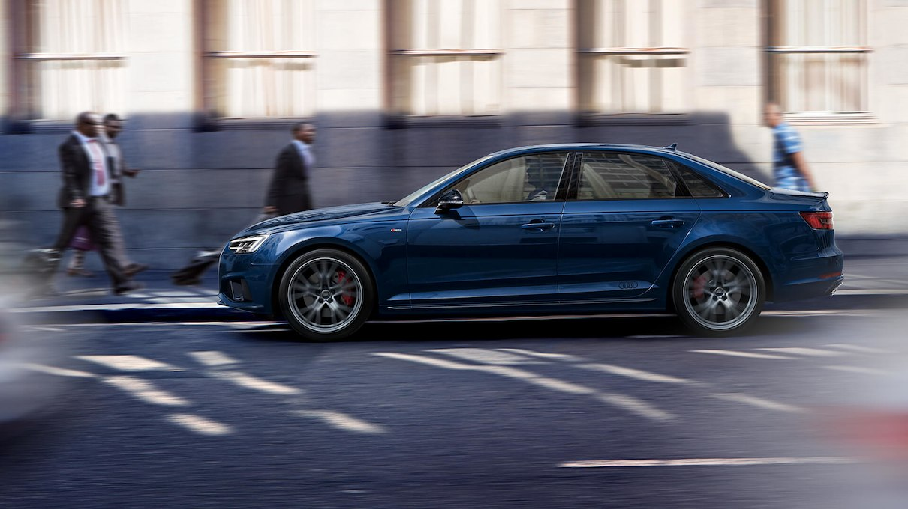
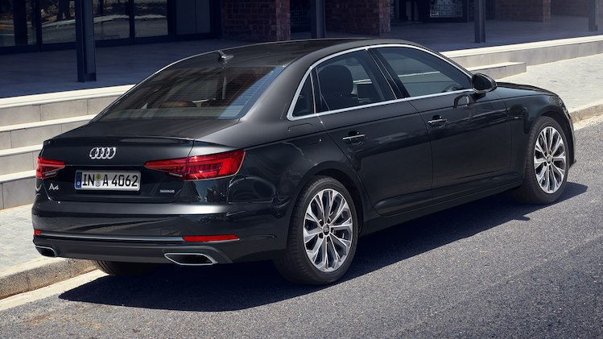
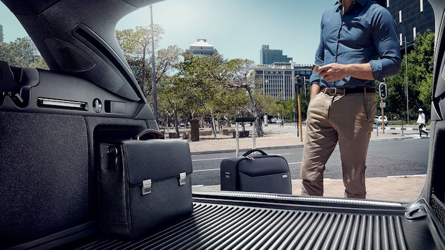
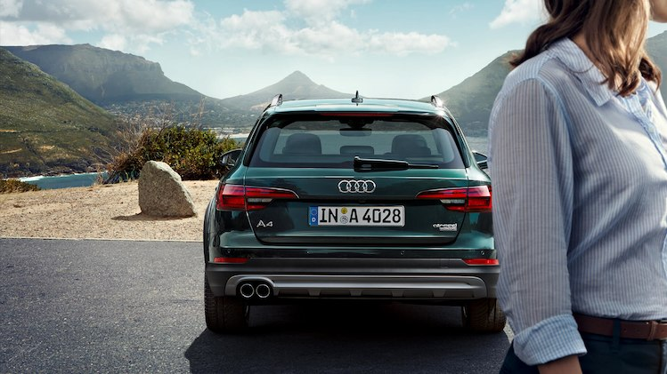

Audi A4
The Audi A4 impresses you with innovative technology and
high individuality. A fascinating synthesis of pioneering technology and
aesthetics: the new Audi A4 is optionally available with the top infotainment
system MMI Navigation plus with MMI touch including Audi connect data
transmission module. This will simultaneously equip your vehicle with
the LTE Advanced standard and a WiFi hotspot. In addition, numerous driver
assistance systems ensure even greater safety and comfort.
AA4 allroad quattro:
Fuel consumption combined *: 5.1-4.9 l/100km
CO₂-emissions combined *: 134-128 g/km
AA4 Limousine:
Fuel consumption combined *: 6.0-4.2 l/100km
CO₂-emissions combined: * 138-110 g/km
A4 Avant:
Fuel consumption combined *: 6.1-4.2 l/100km
CO₂-emissions combined *: 140-111 g/km

Concision from bonnet to boot
4.73 metres long and a 2.82 metre wheelbase –
the Audi A4 Saloon cuts a confident figure on the road. At the front and rear,
clear horizontal lines emphasise its width. The fluid design with concise lines
conveys a dynamic elegance. The combination of optional wheels of up to 19 inches.
and the wide, flat Singleframe grille further underlines the sporty look.
The optional headlights with LED or Audi Matrix LED technology, including dynamic
indicators, create visual accents.
Sporty on the one hand, comfortable on the other. The five-link axles and
electro-mechanical power steering form the basis for dynamic handling and
first-class driving comfort – both of these are extremely light, and also reduce
fuel consumption. Dynamic steering is an available option. This varies the ratio
depending on speed and steering angle – for even more confidence and a sporty
driving experience.

Fuel consumption combined *: 6.0-4.2 l/100km
CO₂-emissions combined *: 138-110 g/km

The Audi A4 Sedan
More comfort, additional safety and lower fuel consumption:
the Audi A4 Sedan is equipped with a great number of driver assistance
systems. For example, the optional predictive efficiency assist helps with
predictive driving, allowing for a fuel efficiency improvement of up to 10%.
Adaptive cruise control with stop & go functionality including traffic
jam assist takes the load off in slow-moving traffic and takes on some of
the steering work at up to 40 mph.
Fuel consumption combined *: 6.0-4.2 l/100km
CO₂-emissions combined *: 138-110 g/km

The Audi A4 Avant
With its forward-looking synthesis of technology and aesthetics,
the Audi A4 Avant is a captivating machine. Progressive design meets
consistently lightweight construction for even greater dynamics.
It also comes with the top infotainment system, MMI Navigation Plus
with MMI Touch, as an optional extra. This integrates the Audi Connect
data transfer module with the LTE Advanced standard and a Wi-Fi hotspot.
The Audi A4 Avant: exciting, inspiring, captivating.
Fuel consumption combined *: 6.0-4.2 l/100km
CO₂-emissions combined *: 140-111 g/km

The interior design of the Audi A4 Avant has been thought
out in every detail: from the high-quality ambience to the impressive
luggage compartment. When the backrest of the rear seating is folded down,
the total storage space tops out at 1,510 litres. Even more comfort is
offered by the sensor control in the rear bumper, available on request,
which allows the car boot to be opened conveniently simply by moving a
foot. Combined with high-quality materials, high-end haptics and high-tech
elements, this creates an impressive ambience and brings the Audi A4
Avant's innovative architecture to life.

The Audi A4 allroad quattro
The new A4 allroad quattro represents exclusive off-road
character. It combines extroverted design with maximum functionality,
occupying a unique position in its sector. The strongly flared wheel
arches and increased ground clearance make the A4 allroad quattro the
perfect companion for gentle off-road terrain.
Fuel consumption combined *: 5.1-4.9 l/100km
CO₂-emissions combined *: 134-128 g/km